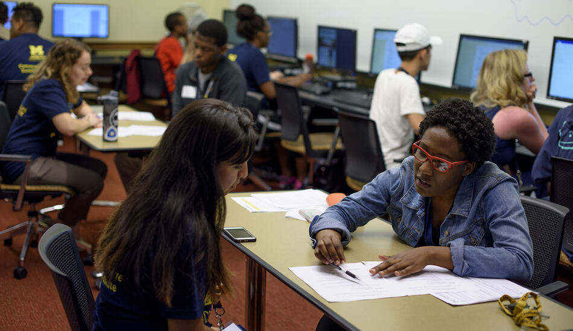

Academic Advising

BSI Academic Advising
Academic advising is a process where students envision, execute, and reflect on their academic plans with guidance from a qualified UMSI Academic Advisor. Students share their goals, challenges, and questions with their academic advisor, and their academic advisor contributes knowledge of university and program requirements, policies, and processes. Together, they develop an academic plan that aligns with the student's personal and professional goals.
What Can Your Academic Advisor Help With?
- Creating an individualized academic plan
- Interpreting an academic policy or procedure
- Discussing concerns about a particular course
- Connecting with student support resources and services
- Navigating a disruption to your BSI experience